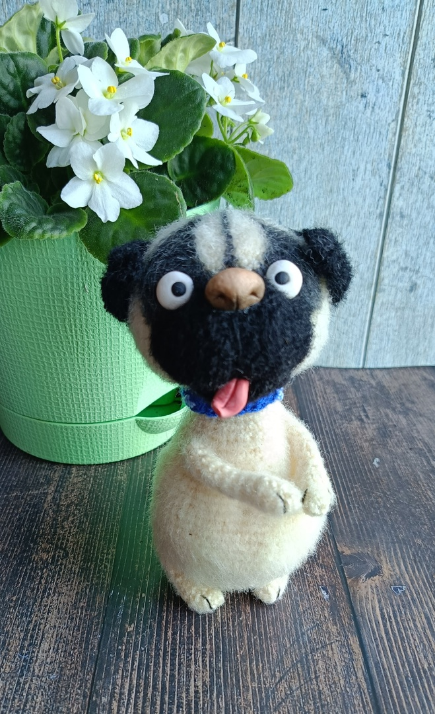
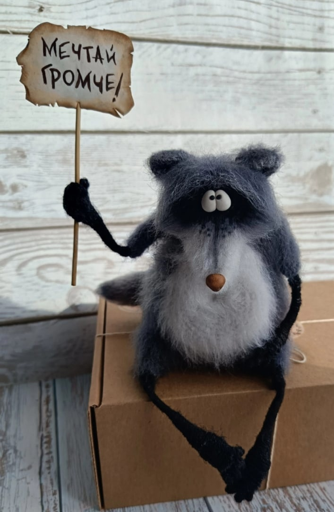

Было 1-2 заказа в месяц, и доход составлял около 6 тысяч в месяц. Большую часть своих изделий дарила просто так. После курса число заказов увеличилось до 13 в декабре и 17 в январе. Теперь очередь из заказов на два месяца вперед, доход за два месяца составил 72 тысячи рублей. Планирует повысить цену, чтобы освободить время и уменьшить количество заказов.
Как этого добилась наша ученица Татьяна Кордюк из Заполярного, продавая вязаные игрушки.
Мы взяли у нее короткое интервью:
— Таня, можешь рассказать, что было до курса, какой средний доход был в месяц? Сколько клиентов?
— Я вяжу игрушки лет 6. Даже не думала продавать, просто дарила знакомым. Но, однажды, попала на бесплатный марафон к Евгении Брун.
Это перевернуло мой мир.
Во-первых, она помогла мне избавится от этого поганенького "синдрома самозванца".
Во-вторых, натолкнула на мысль, что продажи, это не так сложно, если у тебя правильные учителя.
Остановиться я уже не могла. Пошла на курс " Пиши Огонь Посты". А оттуда уже и на "Вк Бабло".
И до курса заказы были, но это так, 1-2 игрушки в месяц. А то и совсем глухо. Ну, 6 тысяч в месяц, не повод бросать официальную работу. Катастрафически мало было)
— Ты зашла на курс 3 месяца назад, какие сложности были во время обучения на нашем курсе? Насколько сложно было учиться? За сколько прошла обучение?
— Учиться было не сложно. Всë налегке.
Доступно и разжевано, только делай. Да и ребята в чате всегда на поддержке. Круто А вот "Вк Бабло", каюсь, я так ещё до конца и не прошла.
В процессе.
Дошла только до 14 урока. Рекламу ещё так и не запустила.
Сложность в том, что заказов стало так много, что прямо не успеваю. Но я обязательно закончу!

— Самостоятельно проходила курс? Как считаешь, с куратором было бы больше мотивации, может дальше бы продвинулась или результаты были еще лучше?
— Курс проходила самостоятельно. Конечно, с куратором было бы проще.
Нет. Не так! – было бы быстрее!
Но и без куратора всë равно один не остаёшься. В чате подсказывают, делятся, помогают. Подружилась с невероятно крутыми ребятами) В любом случае, поддержка просто 24/7.
— До рекламы ты не дошла) А какие сейчас действия делаешь для привлечения клиентов? Как часто пишешь посты?
— Какое-то время писала часто посты. А последние недели 3 даже не пишу. Заказов на 2 месяца вперёд.
— А можешь поделиться, как изменилась жизнь, когда увеличился доход? Может что-то купила себе? Съездила в путешествие? Что-то смогла сделать, чего раньше не могла позволить себе)
— Я позволила, наконец-то, себе отложить денег! Очень мечтаю накопить на квартиру в Питере.
Думаете нереально? А вот и нет! У меня получится и начало уже положено!

— Уверена, у тебя все получится!!! Все, остался только вопрос, сколько сейчас зарабатываешь? Сколько в среднем в месяц? Сколько продаж? Сколько ежемесячный доход за декабрь-январь?
— До обучения заказчиков было 1-2 в месяц. В декабре у меня уже было 13 заказов, а за январь я закрыла уже 17 заказов! И запись на 2 месяца вперёд!
С моих 6 тысяч в месяц, за два месяца доход вырос до 72 тыс.
Теперь подумываю поднять немного цену. Не для того, чтоб навариться, а чтоб заказов стало чуть меньше, а времени свободного чуть больше.
— Отличный план!!! Но, заказов пусть будет достаточно!!! Благодарю тебя за ответы и желаю также стабильно забиваться заказами на 2 месяца вперед и расти в доходах!